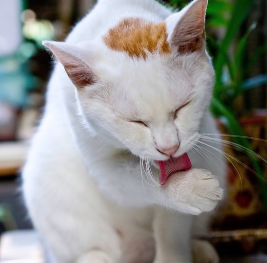
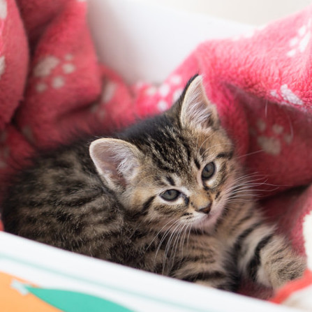

里親になりませんか？
キャトックでは現在、8匹の犬と6匹の猫が、家族を探しています。
皆さんの優しさで傷ついた子たちを癒してあげてください。


プロセス
- お問い合わせよりご応募ください。
- 弊社より資料と申込書や質問表をお送りいたしますのでご記入いただき、ご返信ください。
- 審査が通りましたら当施設にお越しいただき、わんこ・にゃんこと会って頂きます。
- お互いの相性がいいようであればトライアル開始日を決定します。
- １ヶ月のトライアル
- 正式なお引き渡し
審査の基準
- 家族として終生可愛がってくれること
- 収入が安定していること
- 飼育可能な住宅に住んでいること